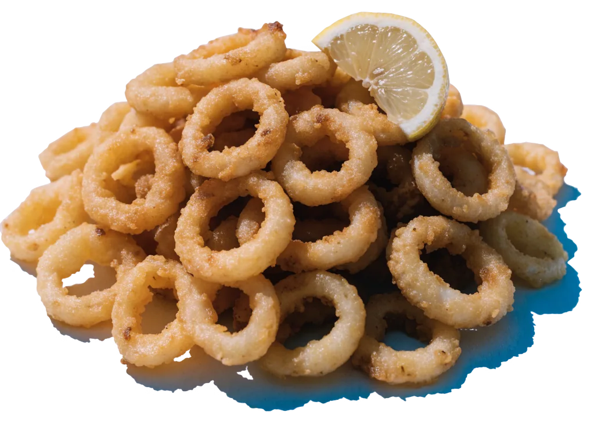
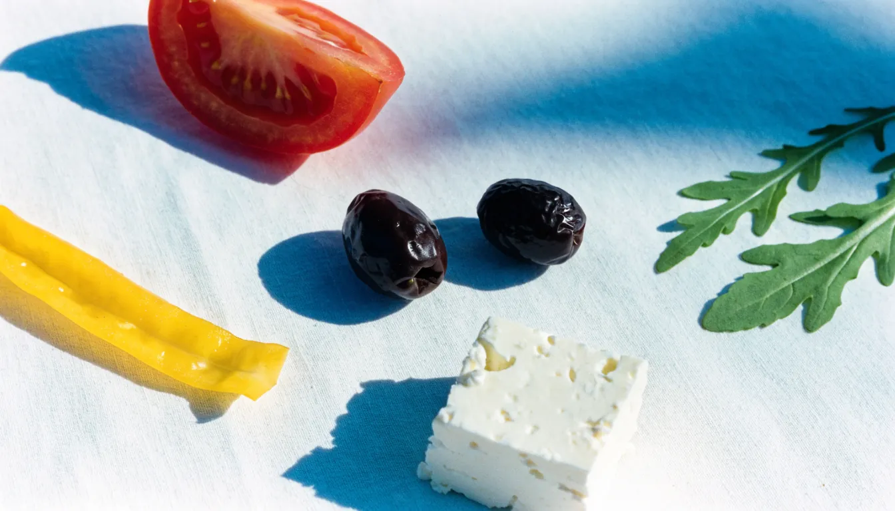

TAVERNAPAROS
Mo, Mi–Sa ab 17 Uhr · So ab 12 Uhr
Griechische Küche, Grill und Calamari – direkt am Heukoppel.
Mo und Mi–Sa 17–23 Uhr, So 12–20 Uhr, dienstags Ruhetag. Heukoppel 17, 22179 Hamburg-Bramfeld.
Drinnen bei Kerzenlicht, draußen hinter der Hecke.
Vom Grill und aus der Pfanne: Gyros, Souvlaki, Calamari, Steak mit Champignons, dazu Bier, Wein, Kaffee und Desserts. Keine Lust zu kochen? Ruf an, wir packen dein Souvlaki zum Mitnehmen ein.
- Küche
- Griechisch
- Plätze
- drinnen und draußen
- Mitnehmen
- ja
- Sonntag
- ab 12 Uhr, mit Mittagstisch
- Ruhetag
- Dienstag
Einmal durch die Tür.
Klinkerwand, weiße Tischdecken, Teelichter und die gemalten Inselhäfen mit dem roten Fischerboot. Und auf den Tellern das, wofür man wiederkommt.
 Foto: B. S. · Google Maps
Foto: B. S. · Google Maps Foto: Sabrina K · Google Maps
Foto: Sabrina K · Google Maps Foto: HDMovieStar · Google Maps
Foto: HDMovieStar · Google Maps
Hafenbilder an der Wand, Kerzen auf dem Tisch.
 Foto: Uwe Müller · Google Maps
Foto: Uwe Müller · Google Maps Foto: Manja K. · Google Maps
Foto: Manja K. · Google MapsWann wir offen haben
Dienstags ist bei uns zu, an allen anderen Tagen geht ab 17 Uhr der Grill an, sonntags schon ab 12.
Heute zwischen 12 und 23 Uhr
Was auf den Tisch kommt
Eine Auswahl von den Tellern, die bei uns rausgehen. Die vollständige Karte mit allen Preisen liegt vor Ort aus.
Calamari

Goldbraune Ringe, als Teller oder neben dem Souvlaki.

Google-Bewertungen
Das sagen Gäste auf Google
Eine Auswahl der Bewertungen, die Google-Nutzer hinterlassen haben, angezeigt über Google Maps. Ob die Verfasser hier gegessen haben, prüfen wir nicht.
Ein Tisch am Heukoppel
Online anfragen, wir rufen zur Bestätigung zurück. Lieber direkt? 040 6413007
Tische ab 17 Uhr, sonntags ab 12 Uhr. Dienstags ist Ruhetag.
Heukoppel 17
Heukoppel 17
22179 Hamburg-Bramfeld
Achte auf das blaue Schild über der Fensterfront. Vor dem Wintergarten stehen Hecken, im Fenster weiße Kugelleuchten.

Foto: HDMovieStar · Google MapsMo, Mi–Sa ab 17 Uhr · So ab 12 Uhr